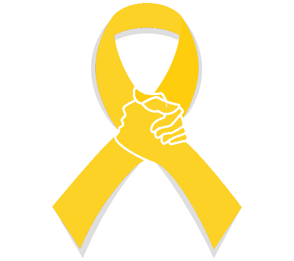

Inicial
Sobre
Palestrante
Depoimentos

Não julgue a dor que não é sua. Respeite!
Não é drama, não é chamar atenção, nem é a falta de Deus e muito menos frescura.
Não se culpe tanto, todos erram e você não sabia o que sabe hoje.
Não é egoismo priorizar a sua saúde mental. Cuide de você!
Não desista. Geralmente é a última chave no chaveiro que abre a porta. - Paulo Coelho
Não enfrente a tempestade só, eu estou aqui para conversar com você!
Uma conversa, um abraço ou um simples "estou aqui" pode salvar muitas vidas!
Falar é a melhor solução. Não rejeitem um pedido de ajuda!
Não deixe transbordar o que já te faz mal. Procure ajuda!
A depressão é um tipo de hemorragia interna. Só que, o que sangra, é a alma.
A depressão é um tipo de hemorragia interna. Só que, o que sangra, é a alma.
A depressão é um tipo de hemorragia interna. Só que, o que sangra, é a alma.